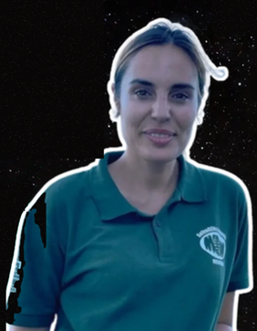
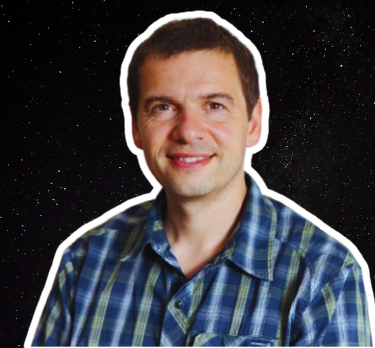
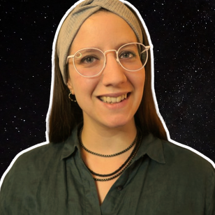

Entrevistas
AstroBioEstrelas: conversas com quem faz ciência espacial em Portugal e no mundo.

Pedro Machado
Astrofísica Planetária & Asteroides · Instituto de Astrofísica e Ciências do Espaço (IA)"Uma tentativa de resposta à pergunta: Será que estamos sozinhos no Universo?"Ler entrevista completa
Entrevistas anteriores

Clara Sousa-Silva
Química quântica aplicada à deteção de bioassinaturas em atmosferas de exoplanetas.
Ler mais →
Marta Avelar
Engenheira biológica que hoje comunica ciência espacial na Agência Espacial Europeia.
Ler mais →
Ana Zélia-Miller
Microrganismos em grutas vulcânicas como análogos de possível vida em Marte, no IRNAS-CSIC (Sevilha).
Ler mais →
Nuno Santos
À procura de exoplanetas com alguns dos maiores telescópios do mundo, no IA-CAUP.
Ler mais →
Mara Leite
Microbiologia, proteção planetária e astrofotografia premiada, na Open University.
Ler mais →
Lígia Coelho
Bioengenharia e biosinaturas em exoplanetas, investigadora na Universidade de Cornell.
Ler mais →
Marta Cortesão
Microbiologia do Espaço, investigadora pós-doutorada no IA-CAUP.
Ler mais →
Rita Severino
Biomarcadores para astrobiologia, doutoranda na Universidade de Alcalá.
Ler mais →
Tiago Ramalho
Biotecnologia para a colonização de Marte: bioreactores, oxigénio e bioplásticos no espaço.
Ler mais →